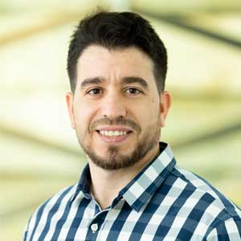
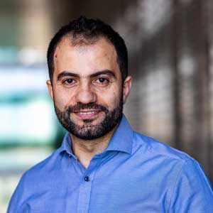
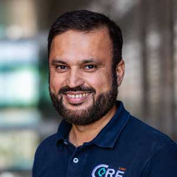

Course Instructors
The team that designed and delivers this shotgun metagenomics course.

Salim Bougouffa
Senior Computational BiologistSalim received his PhD in Bioinformatics from the University of Manchester and conducted postdoctoral research in microbial ecology at HKUST before joining KAUST. His work spans NGS and third-generation sequencing, metagenomics, comparative genomics, genome annotation and phylogenetics.

Husen Umer
Bioinformatics Staff ScientistHusen holds a PhD in Cancer Genomics from Uppsala University in Sweden and works as a Bioinformatics Staff Scientist at the KAUST Bioinformatics Platform. He develops novel tools and scalable workflows for multi-omics data analysis. Husen's expertise include chromatin gene regulation, transcriptomics, genome variant analysis, cancer neoantigen discovery, proteogenomics, and long-read genome sequencing applications.

Ikram Ullah
Bioinformatics Staff ScientistIkram received his PhD from KTH Royal Institute of Technology and is a Bioinformatics Staff Scientist at KAUST's Bioinformatics Platform. His expertise covers bioinformatics and computational biology, phylogenetics, cancer genomics, molecular evolution, and NGS data analysis. He applies machine learning approaches to high-throughput sequencing problems.
KAUST Bioinformatics Platform
Enabling world-class research through expert bioinformatics support, training, and collaboration.
The KAUST Bioinformatics Platform provides cutting-edge computational biology support to researchers across King Abdullah University of Science and Technology. Our team develops and deploys scalable bioinformatics workflows, delivers hands-on training courses, and offers expert consultation in genomics, metagenomics, transcriptomics, and multi-omics data analysis.
We maintain production-ready pipelines on the Ibex HPC cluster, drawing on industry-standard frameworks such as Nextflow and nf-core. Our training programme spans introductory Linux workshops through to specialised courses in RNA-seq, genome assembly, and shotgun metagenomics — equipping KAUST researchers with the skills to analyse their own data independently.
Analysis & Consulting
End-to-end NGS data analysis, custom pipeline development, and one-on-one bioinformatics consulting for KAUST labs.
Training
Hands-on workshops and multi-day courses covering RNA-seq, metagenomics, genome assembly, and HPC computing on Ibex.
Pipeline Development
Scalable, reproducible Nextflow pipelines — including contributions to the nf-core community — deployed on Ibex.
Collaboration & R&D
Active research collaborations with KAUST PIs, co-authorship on publications, and development of novel computational methods.
Acknowledgements
This course builds on outstanding open-source tools and community resources.
This course is developed and delivered by the KAUST Bioinformatics Platform as part of its training programme for KAUST researchers, students, and collaborators. We gratefully acknowledge the support of the KAUST Vice President for Research (VPR) Office and the KAUST Biosciences Core Laboratory, whose resources and expertise make this training programme possible. All sessions run on the Ibex HPC cluster, supported by the KAUST Supercomputing Core Laboratory.
We gratefully acknowledge the developers of the tools and pipelines used throughout this course, including the nf-core/mag pipeline and the broader nf-core community, Nextflow, and all tool authors whose software underpins modern shotgun metagenomics analysis: FastQC, fastp, Bowtie2, MEGAHIT, metaSPAdes, Flye, MetaBAT2, DAS Tool, CheckM2, GTDB-Tk, and many others.
Course materials are licensed under CC BY 4.0. You are free to share and adapt the content with appropriate attribution.